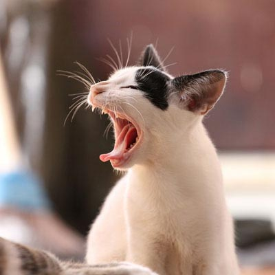
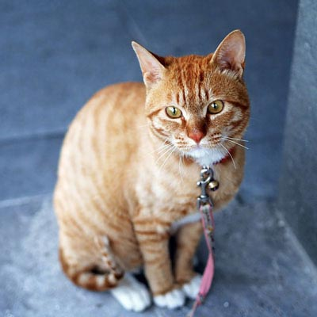

Welcome To Cat Me

For cat
猫咪好生活
为猫咪提供良好的生活环境和养护方式，包括适当的饮食和健康照顾、温馨的人际关系等，让猫咪健康、快乐地生活。

For Me
主人好心情
通过对宠物的呵护和关爱，使主人感受到充实和满足的情感体验，从而获得积极向上的情绪体验和愉悦心情.
猫窝 CatMe是一款专为爱猫人士准备的辅助养宠一体化app
猫窝是一款以宠物档案、宠物智库、医疗咨询、宠物商城为核心的辅助养宠一体化平台。爱猫人士可以在这里学到很多，感兴趣的用户快来下载使用吧!猫窝致力于为养宠用户打造一个记录猫咪日常，提供专业医疗咨询，宠友交流互动，分享自身养宠经验和内容种草的社区。猫窝每日分享养宠方面的科普知识，并且在宠物用品商城中提供科学配比的生骨肉饮食，为用户在喂、护、病、用等方面提供科学养宠一站式服务。通过宠物智库、疾病自查、健康计划、科养指南、每日记录等工具，切实解决用户养宠中遇到的实际问题。猫窝APP已做到全平台覆盖，用户可通过手机各平台应用商店、网页、小程序等多种方式使用产品和服务。
软件功能Services
推送News & Events
农村猫的快乐，城里猫根本想象不到
我记不清我家养过的母猫们到底生过多少窝猫崽儿，反正等到猫崽儿可以独立吃饭的时候，就会被亲戚邻居们要到自己家。我总觉得猫的际遇神奇，一窝生的，被给到不同人家，就会过上完全不同的日子。因为工作变动，我曾把一只猫送回老家养，回到家后，它很快就适应了农村的广阔天地，与家猫们打成一片，屋里屋外到处跑，在室外的垄沟里排泄，白色的毛没过几天就变得深乎乎，我不禁想，自由与溺爱，到底它们更喜欢哪个呢？.
我记不清我家养过的母猫们到底生过多少窝猫崽儿，反正等到猫崽儿可以独立吃饭的时候，就会被亲戚邻居们要到自己家。我总觉得猫的际遇神奇，一窝生的，被给到不同人家，就会过上完全不同的日子。因为工作变动，我曾把一只猫送回老家养，回到家后，它很快就适应了农村的广阔天地，与家猫们打成一片，屋里屋外到处跑，在室外的垄沟里排泄，白色的毛没过几天就变得深乎乎，我不禁想，自由与溺爱，到底它们更喜欢哪个呢？.
06th Nov,2016 IT资讯
在给猫咪选择猫粮时，“铲屎官”要有自己的判断.选粮第一关要过的就是“质量关”，避免给猫咪选到不好的猫粮影响猫咪的成长发育。说到在质量上比较值得信赖的猫粮品牌，知名的冠军宠物食品旗下的爱肯拿不得不提。
17th Nov,2016 Sina新闻中心
通常来讲，猫粮中都是有一定的含肉量的，但是有的多，有的少，而且肉源的品质、工艺都不同，会导致猫粮的口感也千差万别。WoWo的这款烘焙粮它用的是低温烘焙的工艺，这个工艺是在90℃的环境中对肉质进行烘焙处理的，既能保障猫粮的口感酥脆，又能保证肉质的原汁原味，对猫咪来讲，是更能满足它们对肉肉的需求的.
29th Nov,2016 Lens WeLens
随着时代的不断发展，城市的生活节奏大幅提速，两点一线、无暇社交成为日常。对于孤独的绝大多数，养猫是治愈的首选。成年猫的智力相当于2-3岁的小孩，可爱且善解人意。2020年，全国城镇的养猫人数高达2701万人.由此应运而生的猫经济自然飞速发展，相当可观，消费市场一年规模高达884亿元.